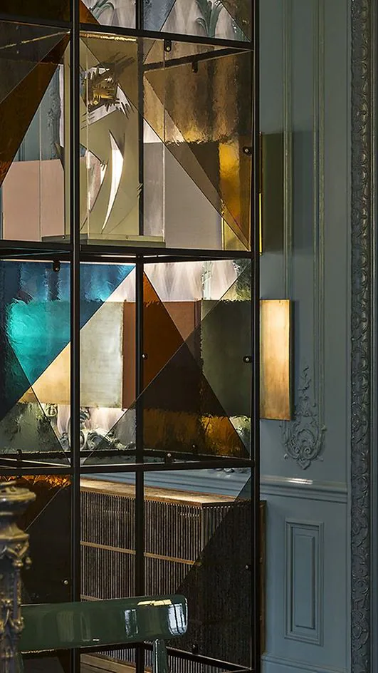
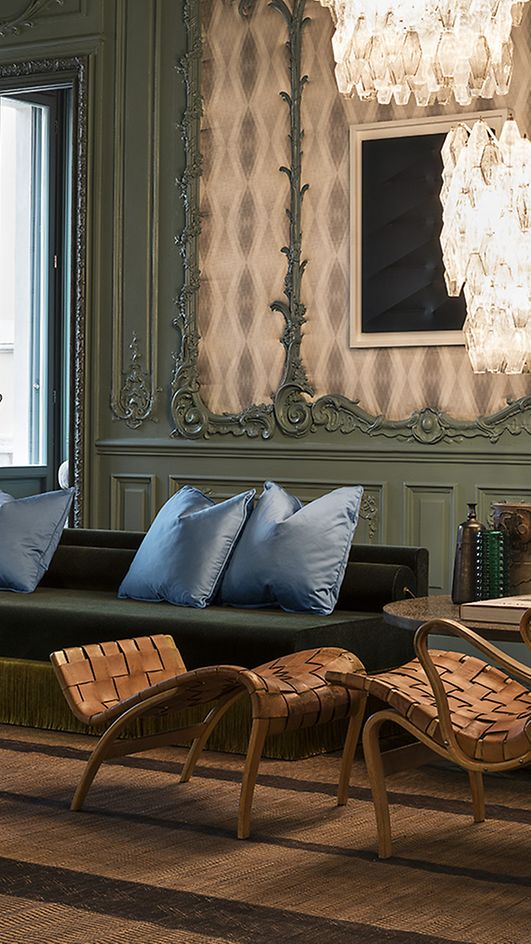
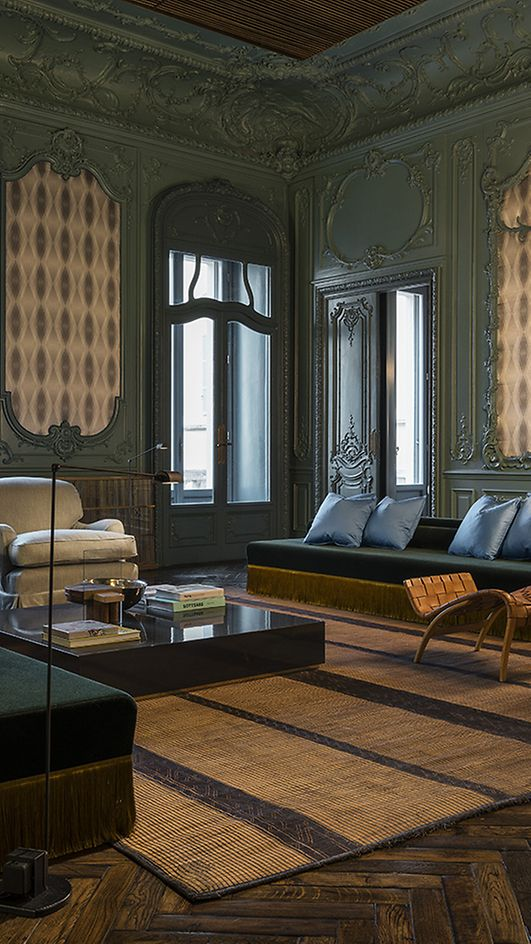
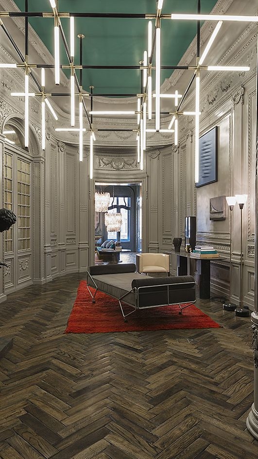
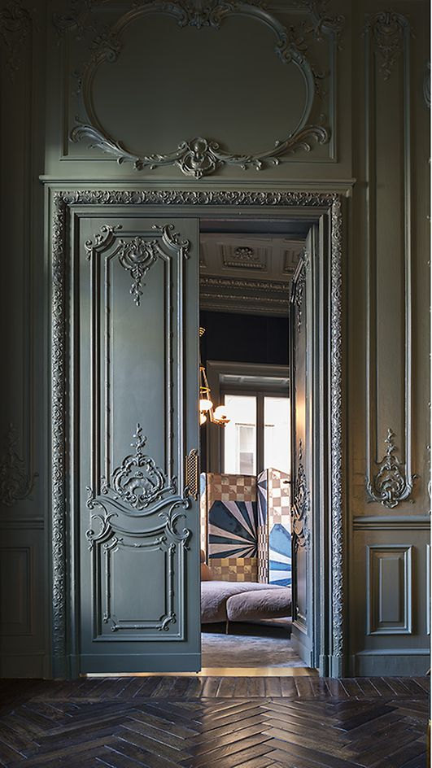
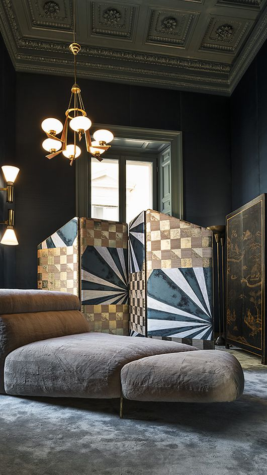
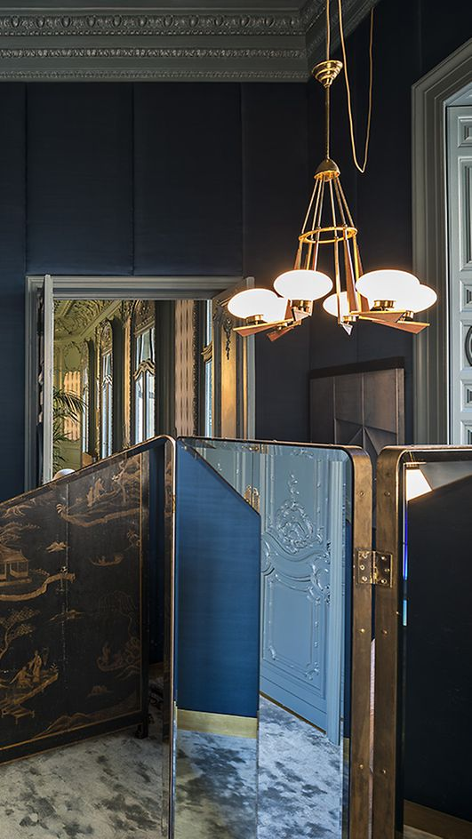
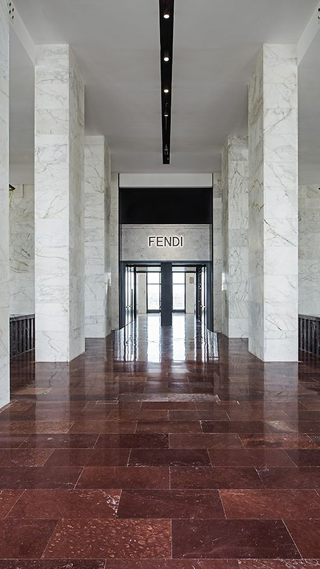
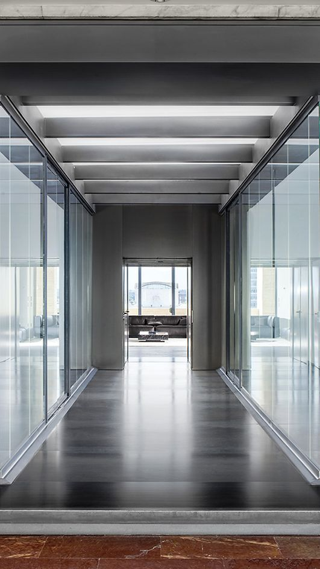

event
Artistic Directors
History of ZARA

1881
He was born in 1881 (probably in the spring) in Salonica, then an Ottoman city, now inGreece. His father

1893
First enrolled in a traditionalreligious school, he soon switched to a modern school. In 1893, he en

1908
In 1908 he helped the group of officers who toppled the Sultan. Mustafa Kemal'scareer flourished as hes

1916
Promotedto general in 1916, at age 35, he liberated two major provinces in eastern Turkey thatyear. In the next two years, he served as commander of several

1920
On April 23, 1920, the GrandNational Assembly was inaugurated. Mustafa Kemal Pasha was elected to its Presidency. Fighting on many fronts, he led

1922
At the end of August 1922, the Turkish armieswon their

1923
In July 1923, the national government signed the Lausanne Treaty with Great Britain,France, Greece, Italy, and others. In mid-October, Ankara

1934
The account of Atatürk's fifteen year Presidency is a saga of dramatic modernization.With indefatigable determination, he created a new political and legal system, abolished the Caliphate and made both government and education secular, gave equal rights to women,changed the alphabet and the attire, and advanced the arts and the sciences, agricultureand industry. In 1934, when the surname law was adopted, the national parliament gave him the name "Atatürk" (Father of the Turks)

1938
On November 10, 1938, following an illness of a few months, the national liberator and the Father of modern Turkey died. But his legacy to his people and to the world endures.